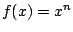
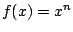

Next: Modulation
Up: Automation and voice management
Previous: Polyphonic synthesis: sampler
Contents
Index
- What input to a fourth-power transfer function gives an output of -12
dB, if an input of 1 outputs 0 dB?
- An envelope generator rises from zero to a peak value during its attack
segment. How many decibels less than the peak has the output reached
halfway into the attack, assuming linear output? Fourth-power output?
- What power-law transfer function (i.e. what choice of
 for the
function ) would you use if you wish the halfway-point value
to be -12 decibels?
for the
function ) would you use if you wish the halfway-point value
to be -12 decibels?
- Suppose you wish to cross-fade two signals, i.e., to ramp one signal in
and simultaneously another one out. If they have equal power and are
uncorrelated, a linear cross-fade would result in a drop of 3 decibels halfway
though the cross-fade. What power law would you use to maintain constant power
throughout the cross-fade?
- A three-note chord, lasting 1.5 seconds, is played starting once every
second. How many voices would be needed to synthesize this without cutting
off any notes?
- Suppose a synthesis patch gives output between
 and
and  . While
a note is playing, a new note is started using the ``rampdown" voice-stealing
technique. What is the maximum output?
. While
a note is playing, a new note is started using the ``rampdown" voice-stealing
technique. What is the maximum output?
Next: Modulation
Up: Automation and voice management
Previous: Polyphonic synthesis: sampler
Contents
Index
Miller Puckette
2006-12-30